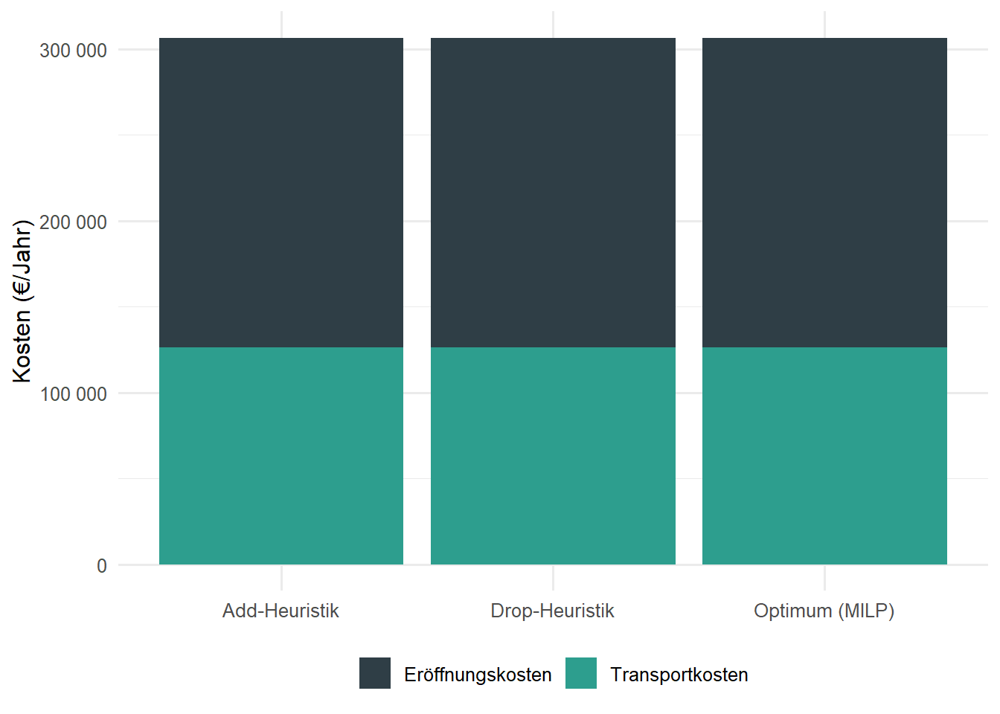

| Filiale | Breitengrad | Längengrad | $\mu$ (Boxen/Tag) | $\sigma$ |
|---|---|---|---|---|
| Wiesbaden | 50.0782 | 8.2398 | 120 | 25 |
| Mainz | 50.0000 | 8.2711 | 150 | 30 |
| Frankfurt | 50.1109 | 8.6821 | 280 | 55 |
| Ruesselsheim | 49.9904 | 8.4116 | 90 | 20 |
| Darmstadt | 49.8728 | 8.6512 | 110 | 24 |
| Offenbach | 50.0956 | 8.7761 | 95 | 22 |
6 Standortplanung II – Diskrete Netzwerkplanungsmodelle
Lernziele
Nach der Bearbeitung dieses Kapitels können Sie …
- diskrete Standort- und Netzwerkplanungsprobleme von den kontinuierlichen Verfahren aus Kapitel 4 abgrenzen,
- das klassische Transportproblem als lineares Optimierungsmodell formulieren und mit der Vogel’schen Approximationsmethode näherungsweise lösen,
- das Warehouse Location Problem (WLP) als gemischt-ganzzahliges Optimierungsmodell aufstellen und seine Entscheidungsvariablen, Zielfunktion und Nebenbedingungen interpretieren,
- ein WLP mit dem R-Paket
omprexakt lösen und das Ergebnis ökonomisch einordnen, - die Grundideen konstruktiver Add- und Drop-Heuristiken nachvollziehen, in R anwenden und ihre Lösungsgüte beurteilen,
- Listen,
purrr::map()und Matrizen als R-Werkzeuge zur Strukturierung und Auswertung von Netzwerkplanungsdaten einsetzen, - qualitative Vorauswahlverfahren (Kapitel 4) und quantitative Kostenoptimierung als einander ergänzende Bausteine einer Standortentscheidung einordnen.
Literatur zur Vertiefung
- Transport-, Umschlags- und Netzwerkmodelle: (Günther und Tempelmeier 2012, Kap. 4).
- Diskrete Standortmodelle, Algorithmen und Anwendungen: Kapitel 1–4 in (Daskin 2013).
- Theorie und Anwendungen der Standortplanung: (Drezner und Hamacher 2002) sowie (Kik 2022).
6.1 Von der kontinuierlichen zur diskreten Standortplanung
Im vorangegangenen Kapitel haben Sie gelernt, wie man mit dem Center-of-Gravity-Ansatz und dem Weiszfeld-Algorithmus einen beliebigen Punkt in der Ebene bestimmt, der die gewichteten Entfernungen zu einer Menge von Nachfragepunkten minimiert. Am Beispiel der SushiFresh GmbH – einem regionalen Hersteller frischer Sushi-Boxen im Rhein-Main-Gebiet, der täglich sechs Supermarkt-Filialen beliefert – lag der so berechnete Optimalpunkt irgendwo mitten im Rhein-Main-Gebiet, ungefähr auf Höhe von Raunheim. Dieser kontinuierliche Blick auf die Standortwahl ist analytisch elegant, in der unternehmerischen Praxis aber nur bedingt hilfreich: SushiFresh kann sein neues Produktions- und Distributionszentrum nicht exakt an den berechneten Koordinaten errichten, sondern muss unter den tatsächlich verfügbaren Gewerbegrundstücken, Hallen oder Bestandsimmobilien auswählen. Genehmigungsrecht, Grundstückspreise, Verkehrsanbindung und Lebensmittelhygiene-Auflagen schränken die Menge realistisch nutzbarer Standorte auf eine endliche, vorab bekannte Menge von Alternativen ein. Genau dies ist der Ausgangspunkt der diskreten Standortplanung: Anstelle eines Optimierungsproblems über die gesamte Ebene \(\mathbb{R}^2\) steht eine Auswahlentscheidung aus einer festen Liste potenzieller Standorte im Mittelpunkt.
In Kapitel 4 wurde die Standortfrage für SushiFresh bereits zweimal aufgegriffen: Zunächst wurde mittels AHP (Analytic Hierarchy Process) eine erste, qualitative Vorauswahl unter mehreren Kandidatenstandorten getroffen – mit dem Ergebnis, dass Raunheim knapp vorne lag. Anschließend lieferte der Center-of-Gravity-/Weiszfeld-Ansatz einen kontinuierlichen Optimalpunkt, der geografisch in dieselbe Richtung wies. Dieses Kapitel stellt die Standortfrage ein drittes Mal – nun aber auf Basis harter, belastbarer Kostenzahlen: Fixkosten für den Betrieb eines Standorts und variable Transportkosten zu den belieferten Filialen. Wie sich zeigen wird, kann eine rein kostenbasierte, diskrete Analyse durchaus zu einem anderen Ergebnis kommen als die qualitative Vorauswahl – und genau diese Spannung zwischen beiden Verfahren wird am Ende des Kapitels explizit diskutiert.
Definition: Diskrete Standortplanung
Bei der diskreten Standortplanung wird aus einer endlichen Menge vorab definierter, potenzieller Standorte diejenige Teilmenge ausgewählt, die eine gegebene Zielgröße (in der Regel die Summe aus fixen Standort- und variablen Transportkosten) minimiert. Im Gegensatz zur kontinuierlichen Standortplanung ist der Lösungsraum nicht mehr stetig, sondern kombinatorisch: Jede mögliche Teilmenge von Standorten stellt eine zulässige Lösung dar.
Diskrete Standortentscheidungen sind stets eingebettet in ein größeres Supply-Chain-Netzwerk, das sich grob in die Stufen Beschaffung, Produktion, Distribution und Absatz gliedern lässt. Auf jeder dieser Stufen können Knoten (Lieferantenwerke, Produktionsstätten, Lagerhäuser, Cross-Docking-Punkte) geöffnet, geschlossen oder miteinander verbunden werden; man spricht in diesem Zusammenhang auch von Netzwerkdesign. Dieses Kapitel konzentriert sich exemplarisch auf die Frage, welcher Produktions-/Distributionsstandort für SushiFresh betrieben werden soll und welche Filiale von welchem Standort beliefert wird. Die vorgestellten Modelle und Verfahren lassen sich jedoch unmittelbar auf andere Netzwerkstufen (z. B. die Wahl von Werksstandorten oder Cross-Docking-Hubs) übertragen.
Wir nähern uns der diskreten Standortplanung in zwei Schritten. Zunächst betrachten wir den Spezialfall, dass die Standorte bereits feststehen und nur noch die Liefermengen optimal auf die Filialen verteilt werden müssen – das klassische Transportproblem. Anschließend erweitern wir das Modell um die eigentliche Standortentscheidung: das Warehouse Location Problem (WLP), bei dem sowohl die Frage „wo?” als auch die Frage „wie viel wohin?” simultan zu beantworten ist.
6.2 Fallbeispiel: SushiFresh GmbH
Die folgenden Abschnitte begleiten ein durchgängiges Fallbeispiel: SushiFresh beliefert täglich sechs Supermarkt-Filialen im Rhein-Main-Gebiet mit frisch produzierten Sushi-Boxen. Für die Produktion und Distribution stehen drei realistische Kandidatenstandorte zur Diskussion, die im Zuge der Standortsuche aus Kapitel 4 als Gewerbeflächen identifiziert wurden – darunter auch Raunheim, der Favorit der AHP-Analyse.
Die sechs Filialen mit ihrer mittleren täglichen Nachfrage \(\mu\) (in Sushi-Boxen) und der zugehörigen Nachfragestreuung \(\sigma\) (die uns erst in späteren Kapiteln wieder begegnet):
Die sechs Filialen fragen zusammen 845 Sushi-Boxen pro Tag nach. Für diese Nachfrage kommen drei Kandidatenstandorte in Frage, jeweils mit unterschiedlichen jährlichen Fixkosten für Miete, Kühltechnik und Produktionsausstattung:
| Standort | Breitengrad | Längengrad | Fixkosten (€/Jahr) |
|---|---|---|---|
| Wiesbaden-Erbenheim | 50.0632 | 8.2999 | 180 000 |
| Mainz-Hechtsheim | 49.9698 | 8.2831 | 210 000 |
| Raunheim | 50.0000 | 8.4650 | 260 000 |
Auffällig ist bereits hier: Raunheim – der Favorit der qualitativen AHP-Bewertung aus Kapitel 4 – ist zugleich der Standort mit den höchsten Fixkosten. Ob sich das durch niedrigere Transportkosten (Raunheim liegt geografisch recht zentral) wieder ausgleicht, ist genau die Frage, der wir in diesem Kapitel nachgehen.
6.3 Das klassische Transportproblem
Nehmen wir zunächst an, SushiFresh betreibe – hypothetisch, als Ausgangsszenario vor der eigentlichen Standortentscheidung – bereits alle drei Standorte gleichzeitig und müsse “nur” noch festlegen, welche Filiale von welchem Standort mit welcher Menge beliefert wird. Die drei Standorte haben dabei folgende Tages-Produktionskapazitäten, die in Summe genau der Gesamtnachfrage aller sechs Filialen entsprechen:
| Standort | Angebot (Boxen/Tag) |
|---|---|
| Wiesbaden-Erbenheim | 350 |
| Mainz-Hechtsheim | 300 |
| Raunheim | 195 |
Drei Quellen (Angebot der Standorte) und sechs Senken (Nachfrage der Filialen) – das klassische Transportproblem.
Definition: Transportproblem
Beim (klassischen) Transportproblem sind \(m\) Quellen \(i \in I\) mit Angebotsmengen \(s_i\) und \(n\) Senken \(j \in J\) mit Nachfragemengen \(a_j\) gegeben. Für jede Verbindung \((i,j)\) fallen Transportkosten \(c_{ij}\) pro transportierter Einheit an. Gesucht ist eine kostenminimale Verteilung der Angebotsmengen auf die Nachfragemengen. Das Problem heißt balanciert, wenn \(\sum_i s_i = \sum_j a_j\) gilt; andernfalls ist es unbalanciert.
Formal lautet das zugehörige lineare Optimierungsmodell mit den Transportmengen \(x_{ij} \geq 0\) als Entscheidungsvariablen:
\[ \begin{align} \min \quad & \sum_{i \in I} \sum_{j \in J} c_{ij} \cdot x_{ij} \\ \text{u.d.N.} \quad & \sum_{j \in J} x_{ij} \leq s_i & \forall i \in I \quad &\rightarrow \text{Angebotsrestriktion} \\ & \sum_{i \in I} x_{ij} = a_j & \forall j \in J \quad &\rightarrow \text{Nachfrage exakt decken} \\ & x_{ij} \geq 0 & \forall (i,j) &\quad \rightarrow \text{Nichtnegativität} \end{align} \]
Da alle Nebenbedingungen und die Zielfunktion linear in \(x_{ij}\) sind, handelt es sich um ein reines lineares Optimierungsproblem (kein MILP) – die Optimallösung liegt stets an einer Ecke des Lösungspolyeders, und es existieren spezialisierte, sehr effiziente Lösungsverfahren. Historisch wurden dafür sogenannte Tableau-Verfahren entwickelt, die auf der klassischen Simplex-Idee aufbauen, sich aber die spezielle Netzwerkstruktur des Problems zunutze machen. Zwei klassische Eröffnungsverfahren, die eine erste zulässige Lösung konstruieren, sind die Nordwestecken-Methode und die Vogel’sche Approximationsmethode.
Die Nordwestecken-Methode ist denkbar einfach: Man beginnt in der “Nordwestecke” des Tableaus (Zeile 1, Spalte 1), beliefert dort so viel wie möglich, streicht die dadurch erschöpfte Zeile oder Spalte und wiederholt das Vorgehen für die verbleibende Restmatrix. Der große Vorteil ist die Einfachheit; der Nachteil: Die Kosten \(c_{ij}\) werden bei der Wahl der Zellen überhaupt nicht berücksichtigt. Das Verfahren liefert daher zwar stets eine zulässige, aber oft eine ökonomisch schlechte Startlösung.
Die Vogel’sche Approximationsmethode (VAM) verbessert dies, indem sie in jedem Schritt die Zeile oder Spalte bevorzugt beliefert, bei der eine “falsche” Entscheidung am teuersten wäre. Dazu wird für jede Zeile und jede Spalte eine Strafkosten-Differenz (englisch penalty) berechnet: die Differenz zwischen den beiden günstigsten Kosten in dieser Zeile bzw. Spalte. Eine große Differenz bedeutet: Wird hier nicht die günstigste Zelle gewählt, wird es überdurchschnittlich teuer. Die Grundidee lässt sich wie folgt zusammenfassen:
# Kernidee der Vogel'schen Approximationsmethode (vereinfacht):
# Wiederhole, solange noch Angebot und Nachfrage offen sind:
# 1. Berechne für jede aktive Zeile/Spalte die Strafkosten-Differenz
# = Differenz zwischen den zwei günstigsten Kosten in dieser
# Zeile bzw. Spalte
# 2. Wähle die Zeile/Spalte mit der GRÖSSTEN Strafkosten-Differenz
# 3. Beliefere darin die günstigste Zelle mit der maximal möglichen
# Menge (= min(Restangebot, Restnachfrage))
# 4. Aktualisiere Restangebot/-nachfrage; ist eine Zeile/Spalte
# erschöpft, wird sie aus der weiteren Betrachtung entferntVAM liefert in der Praxis Lösungen, die meist innerhalb von 0–5 % des Optimums liegen – deutlich besser als die Nordwestecken-Methode, ohne den vollen Rechenaufwand eines Simplex-Laufs zu benötigen. Bevor wir das Verfahren auf unser Beispiel anwenden, lohnt sich ein Blick darauf, wie sich ein Transporttableau in R natürlich als Matrix abbilden lässt.
R-Exkurs: Matrizen als Kosten- und Transporttableaus
Bislang haben Sie tabellarische Daten vor allem als data.frame/tibble kennengelernt, bei denen jede Spalte einen benannten, typisch unterschiedlich interpretierbaren Merkmalsvektor darstellt (z. B. Ort, Längengrad, Bedarf). Ein Kosten- oder Transporttableau ist dagegen eine homogene, rein numerische Tabelle, bei der es nicht auf Spaltennamen im inhaltlichen Sinn ankommt, sondern auf die Position (Zeile \(i\), Spalte \(j\)). Dafür ist der R-Datentyp Matrix (matrix()) die natürliche Wahl.
Wir nutzen die Gelegenheit, die Distanzmatrix zwischen unseren drei Standorten und den sechs Filialen direkt aus den Koordinaten zu berechnen – mit derselben haversine()-Funktion, die Sie bereits aus Kapitel 4 kennen. mapply() wendet haversine() elementweise auf zwei Vektorpaare an; mit matrix() und dimnames formen wir das Ergebnis anschließend zu einem übersichtlichen \(3\times 6\)-Tableau:
Code
# Distanzmatrix (km): Standorte (Zeilen) x Filialen (Spalten), via haversine()
dist_mat <- matrix(
mapply(haversine,
lat1 = rep(standorte_fall$lat, times = nrow(filialen_fall)),
lon1 = rep(standorte_fall$lon, times = nrow(filialen_fall)),
lat2 = rep(filialen_fall$lat, each = nrow(standorte_fall)),
lon2 = rep(filialen_fall$lon, each = nrow(standorte_fall))),
nrow = nrow(standorte_fall),
dimnames = list(standorte_fall$ID, filialen_fall$ID)
)
round(dist_mat, 1) Wiesbaden Mainz Frankfurt Ruesselsheim Darmstadt Offenbach
Wiesbaden-Erbenheim 4.6 7.3 27.8 11.4 32.9 34.2
Mainz-Hechtsheim 12.4 3.5 32.5 9.5 28.5 37.9
Raunheim 18.3 13.9 19.8 4.0 19.4 24.6Mit einem Transportkostensatz von 0,02 €/(Box·km) ergibt sich daraus die Kostenmatrix \(c_{ij}\) (Matrixmultiplikation mit einem Skalar wirkt elementweise):
Code
transportkostensatz <- 0.02 # EUR je Box und Kilometer
# Exakte (ungerundete) Tageskosten je Box - wichtig für Abschnitt 4, wo wir
# diese Sätze mit der Jahresnachfrage (x365) multiplizieren; jede Rundung
# an dieser Stelle würde sich sonst auf hohe fünfstellige Jahresbeträge
# hochrechnen.
kosten_mat_exakt <- dist_mat * transportkostensatz
# Für die übersichtliche Darstellung des Transporttableaus in diesem
# Abschnitt runden wir auf drei Nachkommastellen:
kosten_mat <- round(kosten_mat_exakt, 3)
kosten_mat Wiesbaden Mainz Frankfurt Ruesselsheim Darmstadt Offenbach
Wiesbaden-Erbenheim 0.092 0.146 0.556 0.227 0.657 0.683
Mainz-Hechtsheim 0.249 0.069 0.651 0.189 0.569 0.758
Raunheim 0.366 0.277 0.396 0.079 0.389 0.493Code
[1] TRUEDas Problem ist mit jeweils 845 Boxen auf beiden Seiten balanciert. Nach der Lösung (siehe unten) lässt sich mit rowSums() und colSums() sehr einfach prüfen, ob eine berechnete Allokationsmatrix zulässig ist: Die Zeilensummen müssen dem Angebot, die Spaltensummen der Nachfrage entsprechen.
Die Funktion vogels_approximation() aus R/scm_functions.R implementiert das oben skizzierte Verfahren vollständig, inklusive automatischer Balancierung über ein Dummy-Standort bzw. eine Dummy-Filiale, falls Angebot und Nachfrage nicht übereinstimmen. Wir wenden sie auf unser Beispiel an:
Code
vam_ergebnis <- vogels_approximation(
cost_mat = kosten_mat,
supply = angebot,
demand = nachfrage,
verbose = FALSE
)
vam_ergebnis$allocation Wiesbaden Mainz Frankfurt Ruesselsheim Darmstadt Offenbach
Wiesbaden-Erbenheim 120 0 230 0 0 0
Mainz-Hechtsheim 0 150 50 0 100 0
Raunheim 0 0 0 90 10 95Code
vam_ergebnis$total_cost[1] 296.555Code
vam_ergebnis$balanced[1] TRUEDie Allokationsmatrix zeigt ein ökonomisch plausibles Bild: Wiesbaden-Erbenheim bedient nicht nur die naheliegende Filiale Wiesbaden vollständig, sondern übernimmt mit 230 Boxen auch den Großteil der Belieferung von Frankfurt – schlicht, weil Mainz-Hechtsheim für die übrige Nachfrage bereits ausgelastet ist. Raunheim wiederum beliefert trotz mitunter größerer Distanzen zu einzelnen Filialen konsequent die ihm am nächsten gelegenen Filialen Rüsselsheim, (den Rest von) Darmstadt und Offenbach – die Kostenmatrix sorgt hier ganz automatisch für eine sinnvolle Aufteilung entlang der Geografie. Die Kontrollrechnung rowSums(vam_ergebnis$allocation) liefert exakt den Angebotsvektor (350, 300, 195), colSums(vam_ergebnis$allocation) exakt den Nachfragevektor (120, 150, 280, 90, 110, 95) – die Lösung ist also zulässig. Die Gesamtkosten belaufen sich auf 296.56 €/Tag. Da VAM eine Eröffnungsheuristik ist, muss dieses Ergebnis nicht zwingend die exakte Optimallösung sein; für viele praktische Zwecke – und insbesondere als Startlösung für exaktere Verfahren – ist die Qualität aber ausreichend.
Das Transportproblem unterstellt, dass die Menge der belieferenden Standorte bereits feststeht. Genau diese Annahme wird im nächsten Abschnitt aufgehoben.
6.4 Das Warehouse Location Problem
In der Praxis ist meist nicht nur zu klären, wie Filialen beliefert werden, sondern auch, von welchen Standorten aus überhaupt geliefert werden soll. Für SushiFresh ist das die eigentliche strategische Frage: Lohnt es sich wirklich, alle drei Standorte gleichzeitig zu betreiben (wie im vorigen Abschnitt hypothetisch unterstellt), oder ist eine Konsolidierung auf einen oder zwei Standorte günstiger? Jede Standorteröffnung ist mit einer fixen jährlichen Kostenbelastung verbunden, unabhängig davon, wie viel später tatsächlich über diesen Standort transportiert wird. Dieses Entscheidungsproblem heißt Warehouse Location Problem (WLP) oder auch Uncapacitated Facility Location Problem, wenn – wie hier – keine Kapazitätsobergrenzen je Standort unterstellt werden.
Definition: Warehouse Location Problem
Gegeben seien eine Menge potenzieller Standorte \(i \in I\) mit jährlichen Eröffnungskosten \(f_i\) sowie eine Menge von Kundenstandorten \(j \in J\) mit Nachfragemengen \(a_j\). Für jede mögliche Transportverbindung \((i,j) \in E \subseteq I \times J\) entstehen Transportkosten \(c_{ij}\) pro belieferter Einheit. Gesucht ist die Teilmenge der zu eröffnenden Standorte sowie die zugehörige Zuordnung von Kunden zu Standorten, welche die Summe aus Eröffnungs- und Transportkosten minimiert.
Im Unterschied zum Transportproblem enthält das WLP nun zwei Arten von Entscheidungsvariablen: eine binäre Standortentscheidung \(y_i \in \{0,1\}\) (Standort \(i\) wird eröffnet oder nicht) und weiterhin die kontinuierlichen Transportmengen \(x_{ij} \geq 0\). Das vollständige Modell lautet:
\[ \min \rightarrow \sum_{i \in I} y_i \cdot f_i + \sum_{(i,j) \in E} x_{ij} \cdot c_{ij} \]
unter den Nebenbedingungen
\[ \begin{align} \sum_{(i,j) \in E} x_{ij} &= a_j & \forall j \in J &\quad\rightarrow \text{Nachfrage vollständig befriedigen} \\ x_{ij} &\leq y_i \cdot a_j & \forall (i,j) \in E &\quad\rightarrow \text{nur Transporte von eröffneten Standorten} \\ x_{ij} &\geq 0 & \forall (i,j) \in E &\quad\rightarrow \text{Transportmengen nicht negativ} \\ y_i &\in \{0,1\} & \forall i \in I &\quad\rightarrow \text{Standort wird eröffnet oder nicht} \end{align} \]
Die zweite Nebenbedingung ist der entscheidende Unterschied zum reinen Transportproblem: Solange \(y_i = 0\) ist (Standort \(i\) nicht eröffnet), zwingt sie alle zugehörigen Transportmengen \(x_{ij}\) auf null – ein geschlossener Standort kann keine Filiale beliefern. Erst wenn \(y_i = 1\) gesetzt wird, ist \(x_{ij}\) bis maximal zur vollen Nachfrage \(a_j\) zulässig. Weil sowohl kontinuierliche als auch binäre Variablen im selben Modell auftreten, handelt es sich um ein gemischt-ganzzahliges lineares Optimierungsmodell (Mixed-Integer Linear Program, MILP) – eine deutlich schwierigere Problemklasse als das reine LP des Transportproblems.
Anders als im Transportproblem des vorigen Abschnitts rechnen wir das WLP auf Jahresbasis: Die Fixkosten \(f_i\) aus der Standorttabelle sind bereits Jahreswerte, und auch die Nachfrage muss dafür von der Tages- auf die Jahresebene hochgerechnet werden (365 Tage/Jahr). Bevor wir die Daten dafür zusammenstellen, lohnt sich ein Blick auf ein weiteres zentrales R-Konzept: die Liste.
R-Exkurs: Listen als flexible Datenstruktur
Ein Vektor in R kann nur Elemente eines Datentyps aufnehmen, und ein data.frame/tibble verlangt, dass alle Spalten dieselbe Länge haben. Häufig möchte man aber unterschiedlich strukturierte, unterschiedlich lange oder unterschiedlich typisierte Objekte gemeinsam verwalten – etwa den Namen eines Standorts (Text), seine Koordinaten (ein Vektor der Länge 2), seine Fixkosten (eine Zahl) und einen Status (logisch). Genau dafür ist die Liste (list()) gedacht: ein Container, dessen Elemente beliebige – auch verschiedenartige – R-Objekte sein dürfen.
Der Zugriff auf ein benanntes Element erfolgt entweder mit dem Dollarzeichen $name oder mit doppelten eckigen Klammern [["name"]] bzw. [[position]]. Der Unterschied zu einfachen eckigen Klammern [ ] ist wichtig: liste[1] liefert eine Teilliste mit einem Element, liste[[1]] liefert den Inhalt dieses Elements selbst.
Code
[1] "Wiesbaden-Erbenheim"Code
standort_info[["fixkosten"]] # Zugriff via [[ ]] mit Namen[1] 180000Code
standort_info[["koordinaten"]]["lat"] # verschachtelter Zugriff lat
50.0632 Listen sind nicht nur zur Eingabe nützlich – auch die Rückgabewerte vieler R-Funktionen sind Listen, sobald mehr als ein Ergebnis zurückgegeben werden soll. Das haben wir im vorigen Abschnitt bereits genutzt, ohne es zu benennen: vogels_approximation() liefert kein einzelnes Ergebnisobjekt, sondern eine Liste mit den Feldern allocation (Matrix), total_cost (Zahl) und balanced (logisch). Ebenso liefern add_heuristic_wlp() und drop_heuristic_wlp(), die wir weiter unten einsetzen, ihr Ergebnis als Liste mit den Feldern open_warehouses, fixed_cost, transport_cost, total_cost und assignment. Der Zugriff erfolgt stets gleich: ergebnis$total_cost, ergebnis[["open_warehouses"]] usw.
Die Fixkosten unserer drei Kandidatenstandorte bündeln wir ebenfalls in einer (benannten) Liste:
Code
fixkosten_liste <- list(`Wiesbaden-Erbenheim` = 180000,
`Mainz-Hechtsheim` = 210000,
Raunheim = 260000)
fixkosten_liste$Raunheim # Fixkosten von Raunheim[1] 260000Für die eigentliche Rechnung benötigen wir die Fixkosten und die Jahresnachfrage als benannte Vektoren sowie die zuvor berechnete (ungerundete!) Kostenmatrix kosten_mat_exakt:
| Wiesbaden | Mainz | Frankfurt | Ruesselsheim | Darmstadt | Offenbach | |
|---|---|---|---|---|---|---|
| Wiesbaden-Erbenheim | 0.092 | 0.146 | 0.556 | 0.227 | 0.657 | 0.683 |
| Mainz-Hechtsheim | 0.249 | 0.069 | 0.651 | 0.189 | 0.569 | 0.758 |
| Raunheim | 0.366 | 0.277 | 0.396 | 0.079 | 0.389 | 0.493 |
Drei Standorte bedeuten \(2^3 = 8\) mögliche Teilmengen (inklusive der leeren Menge) an Standortkonfigurationen – klein genug, um sie im nächsten R-Exkurs vollständig durchzurechnen.
R-Exkurs: purrr::map() – eine Funktion auf jedes Element anwenden
Häufig möchte man dieselbe Berechnung auf jedes Element einer Liste oder eines Vektors anwenden – zum Beispiel: “berechne für jede mögliche Standortkombination die Gesamtkosten”. Statt dafür eine for-Schleife (Kapitel 4) zu schreiben, bietet das tidyverse-Paket purrr dafür die Funktionenfamilie map(). map(x, f) wendet die Funktion f auf jedes Element von x an und gibt eine Liste zurück; map_dbl(x, f) tut dasselbe, verlangt aber, dass f je Element eine einzelne Zahl (double) liefert, und vereinfacht das Ergebnis dann automatisch zu einem numerischen Vektor. Das ist der direkte Verwandte von sapply() aus Kapitel 4, mit dem Vorteil, dass der Rückgabetyp klar feststeht und Fehler dadurch früher auffallen.
Wir erzeugen zunächst alle nichtleeren Teilmengen der drei Standorte mit der Basis-R-Funktion combn() und werten sie anschließend mit map_dbl() und der internen Hilfsfunktion .wlp_cost() aus scm_functions.R aus, die für eine gegebene Menge offener Standorte die optimale Filialzuordnung (jede Filiale zum günstigsten offenen Standort) sowie die resultierenden Gesamtkosten berechnet:
Code
# Alle nichtleeren Teilmengen von {1, 2, 3} erzeugen (als Liste von
# Integer-Vektoren): combn(3, k) liefert alle Kombinationen der Größe k
alle_teilmengen <- unlist(
lapply(1:3, function(k) combn(3, k, simplify = FALSE)),
recursive = FALSE
)
length(alle_teilmengen) # 2^3 - 1 = 7 nichtleere Teilmengen[1] 7Code
# Für jede Teilmenge die Gesamtkosten berechnen: map_dbl() wendet die
# anonyme Funktion auf jedes Element von alle_teilmengen an
kosten_je_teilmenge <- map_dbl(alle_teilmengen, function(S) {
.wlp_cost(S, fixkosten_vec, kosten_mat_exakt, nachfrage_jahr)$total
})
# Beste Teilmenge und zugehörige Kosten
beste_teilmenge <- alle_teilmengen[[which.min(kosten_je_teilmenge)]]
standorte_fall$ID[beste_teilmenge][1] "Wiesbaden-Erbenheim"[1] 306378.7Die vollständige Enumeration bestätigt, dass nur Wiesbaden-Erbenheim zu öffnen mit Gesamtkosten von rund 306.379 €/Jahr die global optimale Lösung dieses Beispiels darstellt – trotz der insgesamt niedrigsten Fixkosten aller drei Kandidaten ist das durchaus kein triviales Ergebnis, wie die vollständige Rangliste aller sieben Kombinationen zeigt:
| Offene Standorte | Fixkosten (€) | Transportkosten (€) | Gesamtkosten (€/Jahr) |
|---|---|---|---|
| Wiesbaden-Erbenheim | 180 000 | 126 378.7 | 306 378.7 |
| Mainz-Hechtsheim | 210 000 | 136 547.4 | 346 547.4 |
| Raunheim | 260 000 | 106 962.8 | 366 962.8 |
| Wiesbaden-Erbenheim + Mainz-Hechtsheim | 390 000 | 117 391.2 | 507 391.2 |
| Wiesbaden-Erbenheim + Raunheim | 440 000 | 87 820.8 | 527 820.8 |
| Mainz-Hechtsheim + Raunheim | 470 000 | 90 467.5 | 560 467.5 |
| Wiesbaden-Erbenheim + Mainz-Hechtsheim + Raunheim | 650 000 | 83 598.0 | 733 598.0 |
Bemerkenswert: Raunheim allein betrieben hätte mit rund 106.963 €/Jahr die niedrigsten Transportkosten aller drei Einzelstandorte – geografisch macht sich die zentrale Lage bezahlt. Die um 80.000 €/Jahr höheren Fixkosten kehren den Gesamtvergleich jedoch um: Wiesbaden-Erbenheim gewinnt trotz höherer Transportkosten, weil der Fixkostenvorteil (180.000 € statt 260.000 €/Jahr) die Transportkostendifferenz von knapp 19.400 €/Jahr deutlich übersteigt. Wir kommen auf diesen Punkt im Diskussionsabschnitt am Ende des Kapitels zurück.
Diese Brute-Force-Suche funktioniert nur, weil \(|I|=3\) sehr klein ist. Bei \(|I|=20\) Standorten gäbe es bereits über eine Million, bei \(|I|=50\) mehr als \(10^{15}\) Teilmengen – eine vollständige Suche ist dann selbst auf leistungsfähigen Rechnern aussichtslos. Für realistische Instanzen braucht es daher entweder effiziente exakte Verfahren (Abschnitt 5) oder Heuristiken (Abschnitt 6).
6.5 Exakte Lösung mit ompr
Das WLP lässt sich als MILP mit spezialisierten Solvern exakt lösen, ohne alle Teilmengen einzeln auszuwerten. In R übernimmt das Paket ompr (Optimization Modeling Package for R) die algebraische Formulierung des Modells; die eigentliche numerische Lösung wird über ompr.roi an einen Solver – hier glpk, den freien GNU Linear Programming Kit – delegiert. Der Charme von ompr liegt darin, dass sich Zielfunktion und Nebenbedingungen fast wörtlich aus der mathematischen Formulierung in R-Code übersetzen lassen.
R-Exkurs: Algebraische Optimierungsmodellierung mit ompr
Bislang haben wir Optimierungsprobleme (Center of Gravity, Weiszfeld, Vogel’sche Methode, WLP-Heuristiken) über maßgeschneiderte Algorithmen gelöst – Funktionen, die Schritt für Schritt eine gute oder optimale Lösung konstruieren. ompr verfolgt einen anderen, generischeren Ansatz: Man beschreibt das Modell deklarativ (Variablen, Zielfunktion, Nebenbedingungen) und überlässt die eigentliche Lösungssuche einem universellen Solver. Der Workflow gliedert sich in sechs Schritte:
-
MIPModel()– ein leeres Modellobjekt anlegen, -
add_variable()– Entscheidungsvariablen mit Typ (binary,continuous,integer) und Indexmenge definieren, -
set_objective()– die Zielfunktion formulieren (sum_expr()bildet dabei Summen über Indexmengen, analog zum \(\sum\) in der mathematischen Notation), -
add_constraint()– Nebenbedingungen formulieren, ebenfalls indiziert, -
solve_model()– das Modell an einen konkreten Solver übergeben, -
get_solution()– die optimalen Werte der Entscheidungsvariablen aus dem Ergebnisobjekt extrahieren.
Im folgenden Code entspricht y[i] der binären Standortvariable \(y_i\) und x[i,j] der Transportmengenvariable \(x_{ij}\) aus der mathematischen Formulierung. sum_expr(f[i] * y[i], i = 1:n_I) bildet exakt den Ausdruck \(\sum_{i\in I} f_i \cdot y_i\); die beiden add_constraint()-Aufrufe setzen die Nachfrage- bzw. Kopplungsnebenbedingung aus dem WLP-Modell um.
Code
library(ompr)
library(ompr.roi)
library(ROI.plugin.glpk)
n_I <- nrow(standorte_fall) # Anzahl Kandidatenstandorte (3)
n_J <- nrow(filialen_fall) # Anzahl Filialen (6)
f <- fixkosten_vec # Eröffnungskosten f_i (€/Jahr)
a <- nachfrage_jahr # Nachfrage a_j (Boxen/Jahr)
c_ij <- kosten_mat_exakt # Transportkostenmatrix (€/Box, ungerundet)
modell <- MIPModel() |>
# Entscheidungsvariable y_i: Standort i eröffnen (1) oder nicht (0)
add_variable(y[i], i = 1:n_I, type = "binary") |>
# Entscheidungsvariable x_ij: Transportmenge von Standort i zu Filiale j
add_variable(x[i, j], i = 1:n_I, j = 1:n_J,
type = "continuous", lb = 0) |>
# Zielfunktion: Eröffnungskosten + Transportkosten minimieren
set_objective(
sum_expr(f[i] * y[i], i = 1:n_I) +
sum_expr(c_ij[i, j] * x[i, j], i = 1:n_I, j = 1:n_J),
sense = "min") |>
# NB1: Nachfrage jeder Filiale j vollständig befriedigen
add_constraint(
sum_expr(x[i, j], i = 1:n_I) == a[j], j = 1:n_J) |>
# NB2: Transport nur von eröffneten Standorten (x_ij <= y_i * a_j)
add_constraint(
x[i, j] <= y[i] * a[j], i = 1:n_I, j = 1:n_J)
ergebnis_milp <- solve_model(modell, with_ROI(solver = "glpk", verbose = FALSE))Nach dem Lösen extrahieren wir mit get_solution() die optimalen Werte der Variablen \(y_i\) und \(x_{ij}\) sowie mit objective_value() den optimalen Zielfunktionswert \(Z^\*\):
Code
y_sol <- get_solution(ergebnis_milp, y[i])
x_sol <- get_solution(ergebnis_milp, x[i, j])
# Welcher Standort wird eröffnet (y_i > 0.5, wegen Rundungstoleranz)?
offene_standorte <- standorte_fall$ID[y_sol$i[y_sol$value > 0.5]]
offene_standorte[1] "Wiesbaden-Erbenheim"Code
# Optimaler Zielfunktionswert Z*
round(objective_value(ergebnis_milp), 1)[1] 306378.7| Standort | Filiale | Menge $x_{ij}$ (Boxen/Jahr) |
|---|---|---|
| Wiesbaden-Erbenheim | Wiesbaden | 43 800 |
| Wiesbaden-Erbenheim | Mainz | 54 750 |
| Wiesbaden-Erbenheim | Frankfurt | 102 200 |
| Wiesbaden-Erbenheim | Ruesselsheim | 32 850 |
| Wiesbaden-Erbenheim | Darmstadt | 40 150 |
| Wiesbaden-Erbenheim | Offenbach | 34 675 |
Der Solver bestätigt exakt das Ergebnis der vollständigen Enumeration aus dem vorigen R-Exkurs: Es wird ausschließlich Wiesbaden-Erbenheim eröffnet, alle sechs Filialen werden vollständig von diesem einen Standort beliefert, und die minimalen Gesamtkosten betragen rund 306.379 €/Jahr. Der entscheidende Unterschied ist der Rechenweg: ompr/glpk musste nicht alle sieben Teilmengen einzeln auswerten, sondern nutzt intern effiziente Branch-and-Bound- bzw. Schnittebenenverfahren, mit denen auch WLP-Instanzen mit hunderten Standorten und Kunden in vertretbarer Zeit exakt gelöst werden können.
6.6 Heuristische Lösungsverfahren: Add- und Drop-Heuristik
Trotz der Leistungsfähigkeit moderner MILP-Solver bleibt das WLP ein NP-schweres Problem: Im ungünstigsten Fall wächst die zur exakten Lösung benötigte Rechenzeit exponentiell mit der Anzahl der Standorte und Kunden. Für sehr große Praxisinstanzen – man denke an ein deutschlandweites Filialnetz mit hunderten Kandidatenstandorten und tausenden Filialen, gegebenenfalls noch kombiniert mit weiteren Nebenbedingungen (Kapazitäten, Mehrfachbelieferung, mehrstufige Netzwerke) – kann selbst ein guter Solver an Zeit- oder Speichergrenzen stoßen. In solchen Fällen sind konstruktive Heuristiken häufig der einzig praktikable Weg zu einer brauchbaren, wenn auch nicht notwendigerweise optimalen Lösung.
Die Grundidee beider im Folgenden vorgestellten Heuristiken ist greedy (gierig): Ausgehend von einer zulässigen Startkonfiguration wird in jedem Schritt genau diejenige Änderung vorgenommen, die die Gesamtkosten am stärksten reduziert; das Verfahren stoppt, sobald keine weitere Verbesserung mehr möglich ist. Filialen werden dabei stets dem günstigsten offenen Standort zugeordnet, sodass sich die Gesamtkosten einer Standortmenge \(S\) stets eindeutig berechnen lassen als
\[Z(S) = \underbrace{\sum_{i \in S} f_i}_{\text{Eröffnung}} + \underbrace{\sum_{j \in J} \min_{i \in S} c_{ij} \cdot a_j}_{\text{Transport}}.\]
Die beiden Heuristiken unterscheiden sich lediglich in der Richtung, in der sie sich durch den Lösungsraum bewegen.
Die Add-Heuristik startet mit der leeren Menge \(S = \emptyset\) (kein Standort offen) und fügt in jedem Schritt denjenigen Standort \(i^\*\) hinzu, dessen Öffnung die Gesamtkosten am stärksten senkt: \(i^\* = \arg\max_{i \notin S} \big(Z(S) - Z(S \cup \{i\})\big)\). Solange die Einsparung bei Transportkosten größer ist als die zusätzlichen Eröffnungskosten, lohnt sich das Hinzufügen eines weiteren Standorts; sobald kein Kandidat mehr eine positive Kostenreduktion verspricht, bricht das Verfahren ab.
Die Drop-Heuristik geht den umgekehrten Weg: Sie startet mit allen Standorten geöffnet (\(S = I\)) und schließt in jedem Schritt denjenigen Standort, dessen Schließung die Gesamtkosten am stärksten senkt (bzw. am wenigsten erhöht), bis auch hier keine weitere Verbesserung mehr möglich ist.
Beide Varianten sind in R/scm_functions.R als add_heuristic_wlp() bzw. drop_heuristic_wlp() bereits vollständig implementiert (inklusive der internen Kostenberechnung über .wlp_cost()), sodass wir uns hier auf die Anwendung und Interpretation konzentrieren können, statt die Schleifenlogik erneut nachzuprogrammieren.
Code
add_ergebnis <- add_heuristic_wlp(
fixed_costs = fixkosten_vec,
transport_cost_mat = kosten_mat_exakt,
demand = nachfrage_jahr,
verbose = TRUE
)[Add iter 1] Open Wiesbaden-Erbenheim | Total cost: 306379Code
add_ergebnis$open_names[1] "Wiesbaden-Erbenheim"Code
round(add_ergebnis$total_cost, 1)[1] 306378.7Die Add-Heuristik öffnet bereits im ersten Schritt Wiesbaden-Erbenheim (Gesamtkosten sinken von \(\infty\) auf rund 306.379 €/Jahr) – kein weiterer Standort kann die Kosten danach noch senken, das Verfahren bricht sofort ab.
Code
drop_ergebnis <- drop_heuristic_wlp(
fixed_costs = fixkosten_vec,
transport_cost_mat = kosten_mat_exakt,
demand = nachfrage_jahr,
verbose = TRUE
)[Drop iter 1] Close Raunheim | New total cost: 507391
[Drop iter 2] Close Mainz-Hechtsheim | New total cost: 306379Code
drop_ergebnis$open_names[1] "Wiesbaden-Erbenheim"Code
round(drop_ergebnis$total_cost, 1)[1] 306378.7Die Drop-Heuristik startet mit allen drei offenen Standorten (Gesamtkosten rund 733.598 €/Jahr), schließt im ersten Schritt Raunheim (den mit Abstand teuersten Standort in der Fixkostenkomponente; verbleibende Kosten rund 507.391 €/Jahr) und im zweiten Schritt Mainz-Hechtsheim, bis auch hier nur noch Wiesbaden-Erbenheim übrig bleibt (rund 306.379 €/Jahr). Ein Bemerkenswertes Ergebnis: Add- und Drop-Heuristik konvergieren hier unabhängig voneinander auf dieselbe, nachweislich optimale Lösung – dasselbe Ergebnis, das wir bereits durch vollständige Enumeration und mit ompr bestätigt hatten. Das ist keineswegs selbstverständlich (die beiden Heuristiken können bei anderen Kostenstrukturen durchaus zu unterschiedlichen, suboptimalen lokalen Lösungen führen), zeigt hier aber, wie eindeutig der Kostenvorteil von Wiesbaden-Erbenheim in diesem Fallbeispiel ausfällt.
| Verfahren | Offene Standorte | Gesamtkosten (€/Jahr) | Gap zum Optimum (%) |
|---|---|---|---|
| Optimum (MILP) | Wiesbaden-Erbenheim | 306 378.7 | 0 |
| Add-Heuristik | Wiesbaden-Erbenheim | 306 378.7 | 0 |
| Drop-Heuristik | Wiesbaden-Erbenheim | 306 378.7 | 0 |

Auch wenn in diesem Fallbeispiel alle drei Verfahren dasselbe Ergebnis liefern, gilt für die Praxis: Add- und Drop-Heuristik sollten – wenn möglich – parallel gerechnet und mit dem Ergebnis eines exakten Verfahrens (oder zumindest einer bekannten unteren Schranke) verglichen werden, bevor eine Standortentscheidung mit jahrzehntelanger Bindungswirkung getroffen wird. Gerade bei der Wahl von Distributionsstandorten, die – anders als etwa Bestellmengen – nur mit hohem Aufwand revidierbar sind, ist ein belastbares Optimalitäts- oder zumindest Gütemaß (der Gap zum Optimum) unverzichtbar (Chopra und Meindl 2025).
6.7 Qualitative vs. quantitative Standortbewertung
An dieser Stelle lohnt sich ein Blick zurück auf Kapitel 4: Dort hatte die AHP-Analyse unter den drei Kandidatenstandorten knapp Raunheim favorisiert – ein Ergebnis, das auf einer strukturierten, aber notwendigerweise subjektiven Gewichtung schwer quantifizierbarer Kriterien (z. B. Erweiterungsfähigkeit, Verkehrsanbindung, Genehmigungsrisiko) beruhte. Die in diesem Kapitel durchgeführte quantitative Kostenoptimierung kommt zu einem anderen Schluss: Wiesbaden-Erbenheim minimiert die Gesamtkosten aus Fixkosten und Transport.
Der Grund für die Diskrepanz ist im direkten Zahlenvergleich schnell erklärt:
| Standort (Einzelbetrieb) | Fixkosten (€) | Transportkosten (€/Jahr) | Gesamtkosten (€/Jahr) |
|---|---|---|---|
| Raunheim | 260 000 | 106 962.8 | 366 962.8 |
| Wiesbaden-Erbenheim | 180 000 | 126 378.7 | 306 378.7 |
Raunheim ist geografisch tatsächlich der zentralere Standort und erzielt für sich genommen die niedrigsten Transportkosten aller drei Kandidaten (rund 106.963 €/Jahr gegenüber rund 126.379 €/Jahr für Wiesbaden-Erbenheim) – dieser Vorteil von knapp 19.400 €/Jahr ist genau das, was die AHP-Kriterien wie “zentrale Lage” oder “Erreichbarkeit” implizit honorieren. Die um 80.000 €/Jahr höheren Fixkosten von Raunheim übersteigen diesen Transportkostenvorteil jedoch deutlich und kehren den Gesamtvergleich um.
Diese Beobachtung ist kein Widerspruch, sondern verdeutlicht die unterschiedliche Funktion beider Verfahren im Entscheidungsprozess: Die AHP-Analyse aus Kapitel 4 eignet sich hervorragend für eine erste Vorauswahl unter schwer quantifizierbaren, teils weichen Kriterien und für die Einbindung unterschiedlicher Stakeholder-Perspektiven. Sie ersetzt aber keine anschließende, belastbare Kostenoptimierung auf Basis harter Zahlen, sobald diese verfügbar sind – und genau umgekehrt greift eine reine Kostenoptimierung häufig zu kurz, wenn schwer monetarisierbare Aspekte (Reputationsrisiko, Mitarbeiterverfügbarkeit, langfristige Flexibilität) ignoriert werden. In der Praxis ergänzen sich beide Verfahren: qualitative Verfahren zur Reduktion des Suchraums auf eine überschaubare Anzahl valider Kandidaten, quantitative Optimierungsmodelle zur finalen, kostenbasierten Entscheidung zwischen ihnen.
Für SushiFresh bedeutet dies: Das Unternehmen entscheidet sich auf Basis der in diesem Kapitel durchgeführten Analyse für eine Konsolidierung des Produktionsstandorts auf Wiesbaden-Erbenheim. Diese Standortentscheidung begleitet die Fallstudie auch in den folgenden Kapiteln weiter – etwa bei der Frage nach Bestandspooling (Kapitel 6) oder bei der Analyse des Bullwhip-Effekts entlang der Distributionskette (Kapitel 8).
6.8 Zusammenfassung
Dieses Kapitel hat den Übergang von der kontinuierlichen zur diskreten Standortplanung vollzogen: Statt eines beliebigen Punktes in der Ebene wird eine Teilmenge aus einer endlichen Liste vorab definierter Standortkandidaten gesucht. Als methodischen Ausgangspunkt haben wir das klassische Transportproblem kennengelernt, bei dem die belieferten Standorte bereits feststehen und nur die Transportflüsse kostenminimal zu bestimmen sind; die Vogel’sche Approximationsmethode liefert dafür in wenigen Iterationen eine gute Startlösung, indem sie in jedem Schritt die Zeile oder Spalte mit der größten Strafkosten-Differenz vorrangig beliefert.
Das Warehouse Location Problem erweitert dieses Modell um die eigentliche Standortentscheidung: Eine binäre Variable \(y_i\) pro Standort entscheidet über Eröffnung oder Nichteröffnung, gekoppelt an die Transportmengen \(x_{ij}\) über die Nebenbedingung \(x_{ij} \leq y_i \cdot a_j\). Weil sowohl binäre als auch kontinuierliche Variablen auftreten, handelt es sich um ein gemischt-ganzzahliges lineares Optimierungsmodell (MILP), das sich mit dem R-Paket ompr in wenigen, an die mathematische Formulierung angelehnten Codezeilen exakt lösen lässt. Am Beispiel von SushiFresh zeigte sich: Obwohl Raunheim geografisch am zentralsten liegt und die niedrigsten Transportkosten aufweist, ist die Konsolidierung auf den fixkostengünstigeren Standort Wiesbaden-Erbenheim in der Gesamtbetrachtung optimal – ein Ergebnis, das im Widerspruch zur qualitativen AHP-Empfehlung aus Kapitel 4 steht und die Notwendigkeit beider Verfahren im Entscheidungsprozess unterstreicht. Da das WLP NP-schwer ist, sind für große Instanzen konstruktive Add- und Drop-Heuristiken ein praktikabler Ausweg – im Fallbeispiel fanden beide unabhängig voneinander das globale Optimum, was allerdings keine allgemeingültige Eigenschaft dieser Verfahren ist und stets gegen eine exakte oder zumindest untere Schranke abgeglichen werden sollte.
Auf der R-Seite haben Sie mit diesem Kapitel vier neue Bausteine kennengelernt, die weit über die Standortplanung hinaus nützlich sind: Listen als flexibler Container für heterogene, auch verschachtelte Daten und Funktionsergebnisse; purrr::map()/map_dbl() zur kompakten Anwendung einer Funktion auf jedes Element einer Liste oder eines Vektors; Matrizen als natürliche Repräsentation homogener, positionsbasierter Tableaus mit rowSums()/colSums() zur schnellen Konsistenzprüfung; und die algebraische Optimierungsmodellierung mit ompr als Alternative zu maßgeschneiderten Algorithmen, wenn ein Standardsolver zur Verfügung steht.
Kontrollfragen
- Worin unterscheidet sich die diskrete von der kontinuierlichen Standortplanung, und warum ist die diskrete Variante für die meisten praktischen Standortentscheidungen realistischer?
- Formulieren Sie die Zielfunktion und die Nebenbedingungen des klassischen Transportproblems. Was bedeutet es, wenn ein Transportproblem “unbalanciert” ist, und wie geht
vogels_approximation()damit um? - Erläutern Sie die Grundidee der Vogel’schen Approximationsmethode. Warum liefert sie in der Regel bessere Startlösungen als die Nordwestecken-Methode?
- Welche zusätzliche Entscheidungsvariable enthält das Warehouse Location Problem im Vergleich zum Transportproblem, und welche Rolle spielt die Nebenbedingung \(x_{ij} \leq y_i \cdot a_j\)?
- Warum handelt es sich beim WLP um ein gemischt-ganzzahliges (statt eines rein linearen) Optimierungsmodell? Welche Konsequenz hat das für die Lösbarkeit großer Instanzen?
- Beschreiben Sie die Vorgehensweise von Add- und Drop-Heuristik in eigenen Worten. Warum können beide Verfahren im Allgemeinen zu unterschiedlichen Lösungen für dieselbe Instanz führen, obwohl sie im SushiFresh-Beispiel übereinstimmen?
- Was versteht man unter dem “Gap zum Optimum”, und warum ist er bei heuristischen Standortentscheidungen eine wichtige Kennzahl?
- Erklären Sie den Unterschied zwischen einer Liste (
list()) und einemdata.frame/tibble. Nennen Sie ein Beispiel aus diesem Kapitel, bei dem eine R-Funktion ihr Ergebnis sinnvollerweise als Liste zurückgibt. - Im SushiFresh-Beispiel favorisiert die qualitative AHP-Analyse (Kapitel 4) Raunheim, während die quantitative WLP-Analyse (dieses Kapitel) Wiesbaden-Erbenheim favorisiert. Erklären Sie diese Diskrepanz anhand der Fix- und Transportkosten und diskutieren Sie, wie beide Verfahren in der Praxis sinnvoll kombiniert werden können.